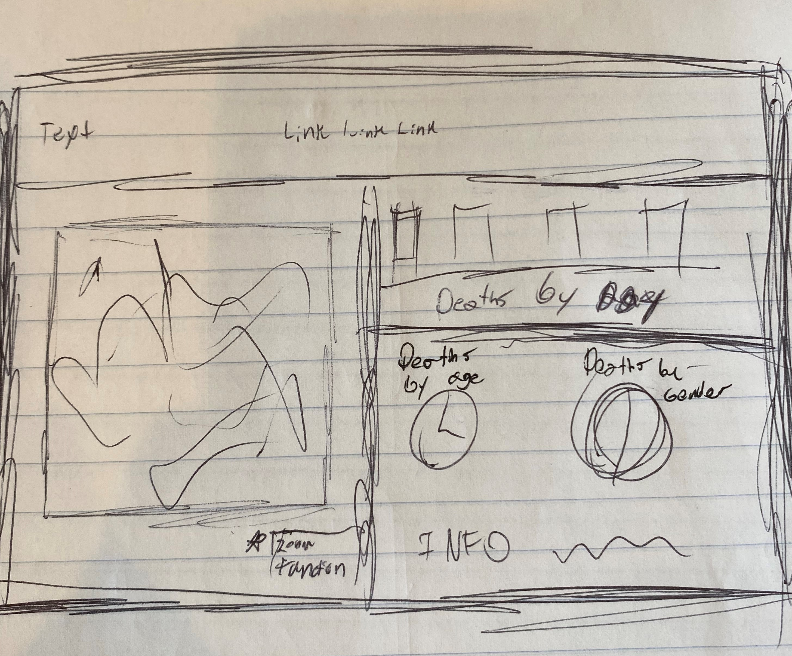
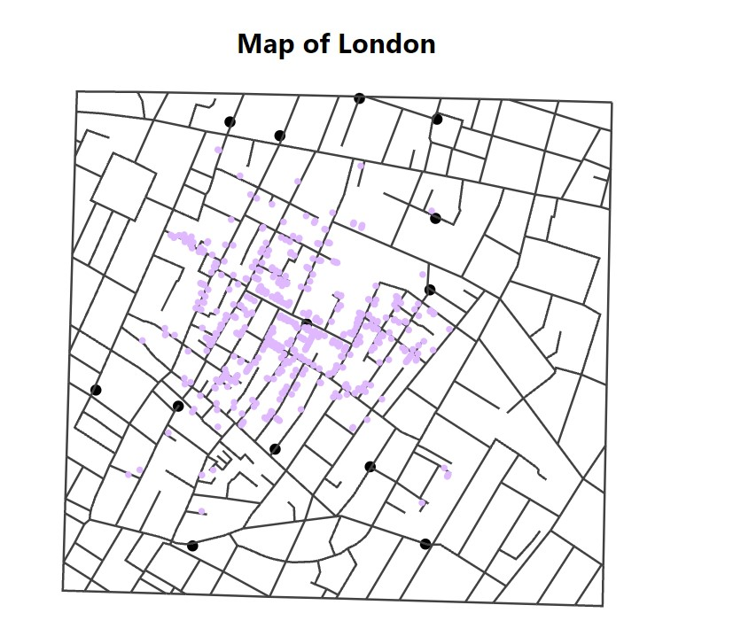
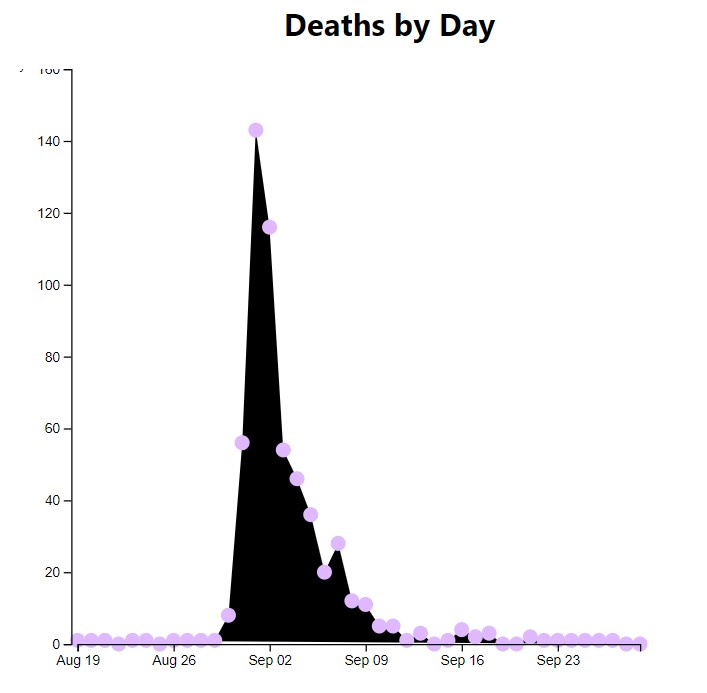
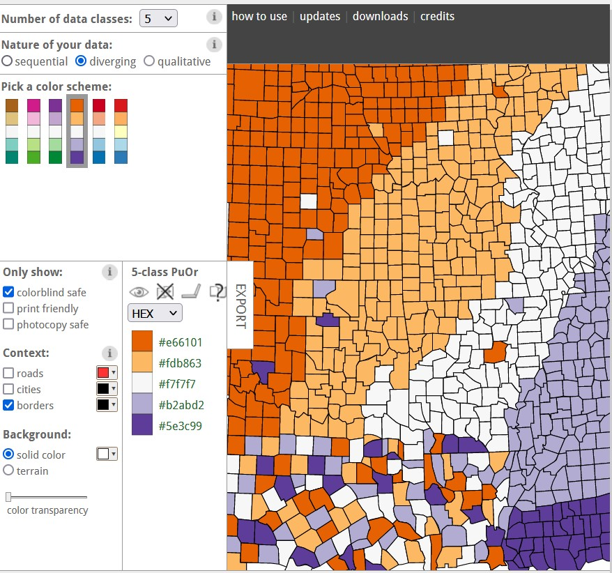
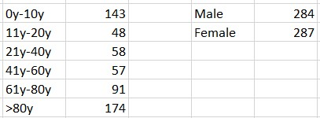

For my design process I initially started by watching a few youtube videos on visualizations done specifically with this dataset. There proved to be a lot of videos on youtube that were helpful in helping me to conceptualize some of the different visualization choices I could make. Once I felt like I had a good understanding of the project, I decided to sketch a rough idea of how i wanted the page to look. This seemed like a logical first step considering im an HCI grad student and rapid prototyping is a cornerstone of UX design.
My initial design was pretty simple and featured a top bar navigation element with the visualizations being div'ed out side by side as well as stacking divs on top of each other so that the visualizations would all appear and be able to be interacted with, without having to scroll the page.
After sketching I set up a super simple html layout and css styling that I intended to polish up at a later time, but unfortunatley ran out of time because I started on the project late.
My design choices for this project, as stated earlier, mainly consisted of making sure that A:all visualizations would be displayed on the same page without having the need to scroll to interact, and B:That per the project guidelines, I made color choices that would be colorblind safe to increase the accessibility of my visualizations. In order to make sure my color chocies were appropriate for colorblindness I used colorbrewer2.org to only show me colorblind safe. The colors chosen through colorbrewer were used on the death dots on the map as well as for the the total deaths per day dots that appear in the timeline graph in part to make them easy for individuals with colorblindess to be able to easily see each dot. Color for the dots was also intended to convey that those elements were interactive. When the dots were interacted with on the timeline, the dots on the map change to red and grow by a few pixels to make them identifiable.
  I decided to go with a line chart even though I had initially sketched a bar chart and started coding a bar chart because I found a line chart tutorial that I was able to understand faster than going the bar graph route.
Questions and Discoveries:Even though I didnt make it very far in the project deliverables, I think its fair to say that the culprit for the cholera outbreak was a single pump on broad street given the distrubiton of deaths around the central pump on the map. This, however, is already a given considering the history we learned about this event during the in class presentation. Additionaly, from the videos I watched on other peoples work it was clear that very young children and the elderly had a much higher death percentage (55% combined, 25& and 30% respectively) than those aged 11-80. This information makes a lot of sense considering what I know about how modern day diseases impact the overall population, usually the super young and elderly are at higher risk. This could possibly be due to weaker immune systems. Based on the data, I assumed that the pump was shut off on or near Sep 1st given the sharp drop in deaths per day, however, in reality the pump wasnt shut off until Sept 7th when deaths were already declining. I also assumed that the persons sex would have no impact on the death rate and based on the dataset this appears to be true as its a pretty even 50-50 distribution between male and female.
I verififed death numbers by age and sex by using excel and COUNTIF functions to cycle through age and sex information.
